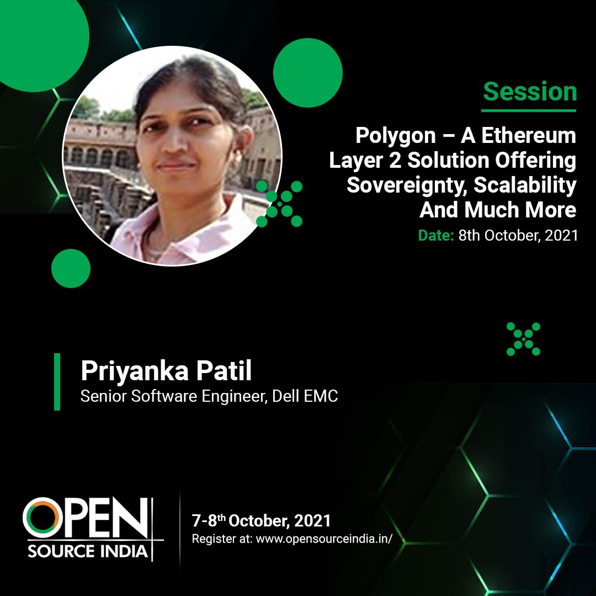

Through 14 years of enterprise software experience and my Master of Science in Information Systems from the University of Washington Foster School of Business, I have developed a deep business acumen rooted in data science and advanced analytics.
Dell Technologies | Toyota Motors Europe | HCL | iGATE Capgemini | Icicle Technologies
Built an explainable churn diagnostics framework and interactive BI application to identify at-risk telecom subscribers, pinpoint root causes of attrition, and empower cross-functional teams with targeted retention strategies.
View Project AnalysisMined and analyzed 62,642 unstructured compensation records to translate raw market data into a strategic decision framework evaluating skills acquisition ROI, company retention patterns, and career progression economics[cite: 3].
View Project Analysis